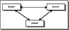
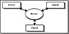

|
|
 |

|
Developing Java Enterprise Applications
by Stephen Asbury ; Scott R. Weiner
Wiley Computer Publishing, John Wiley & Sons, Inc.
ISBN: 0471327565 Pub Date: 02/01/99

|
CHAPTER 19
What Are Messaging and the Java Messaging Service?
Messaging is a mechanism for programs to communicate with each other. In one sense, messaging is like RMI or even sockets, in that all three allow programs to communicate with each other. However, messaging is based on a fundamental entity called a message. A message represents the content of a single communication between two or more programs. Programs that use messaging send and receive messages. In this respect, messaging is more like using TCP/IP packets or even UDP datagrams than it is like sockets. In effect, messaging is the process of communicating between programs by creating, sending, and receiving messages.
Normally, messaging support is provided via a library, server, or some other middleware. The term message-oriented-middleware, or MOM, is often used to refer to an infrastructure that supports messaging. MOM defines what a message looks like to the program, how a program sends a message, and how a program receives a message. The Java Messaging Service (JMS) provides a standard Java-based interface to the messaging services of a MOM or some other provider.
There are two basic designs for a messaging provider. The first, pictured in Figure 19.1, uses messages to communicate between applications but still connects the two applications that are communicating.
The second design, pictured in Figure 19.2, uses a server to support messaging. In this case, clients connect to a server that distributes messages for them. Clients that want to receive messages register with the server for notification. This design is more like the post office, where a central entity manages message delivery.

Figure 19.1 Client-based messaging.
The advantage of the server approach is that services such as load balancing, message persistence, and security can be administered and upgraded in a single location. This brings up an important point: Messaging providers can include a variety of services on top of the basic ability to send and receive messages. When considering a provider, ask the following questions:
- What happens to a message if the intended receiver is not available? Many providers either store messages for later delivery or if specified, ignore these messages.
- What happens when the server goes down? Obviously, messages won’t go anywhere, but how does the client figure this out?
- Do all clients receive all messages? Providers normally define the concept of a message destination. Clients that want to receive messages indicate the destination to which they are listening.
- Can any client send messages to any other client? Providers can provide mechanisms for limiting the targets for a client’s message. Often, the target for a message is called a destination because it could represent one or more other programs. The messaging provider can provide limitations on the destinations to which a client can send or at least require clients to choose a destination to limit the receivers for a message.

Figure 19.2 Server-based messaging.
- What can a message include? On top of the basic design for a messaging system, there is the definition of the messages themselves. Depending on a provider’s goals, it might support binary messages, text messages, messages that have key-value pairs, or even messages that support objects as the message body. The limitations on message content are often driven by the systems that a provider supports and the performance constraints that the provider places on their products. For example, sending arbitrary objects can be a performance nightmare because it involves an arbitrary format and size. On the other hand, saying that all messages are 10-character strings allows the provider to optimize their software for these messages. In general, the actual choices available to a messaging programmer lie somewhere toward the arbitrary side of these two extremes, with a performance cost associated with message size and complexity.
Hopefully, these questions help you determine your requirements and the provider that can fulfill them.
At this point, you may be asking yourself, So what? What do I get for using these messages? The answer is, It depends. For some applications, RMI, HTTP, or sockets are the right solution. For example, if you just want to talk to your Oracle database, you probably don’t need to add the messaging abstraction in the middle of that relationship. The time when messaging is useful is when you want to separate the destination or networking from the client’s code. For example, a messaging service might ensure the arrival of the insert statements that you want to make for that database. If the database is unavailable now—because, for example, you are using a laptop on an airplane—the service will deliver the insert messages later. The messaging service decouples the sender and receiver, allowing them to work together without being designed to specifically and only work with each other. This decoupling has advantages in a number of areas, which are discussed later in the chapter. First, we need to address a few core concepts of messaging.
Messaging Domains
The simple concept of messaging can be further specialized into several domains. These domains are used to define which client receives a message. The most common of domains are:
- • Point-to-point
- • Publish-subscribe
- • Request-reply
Each of these domains defines different models for the programs that are communicating. Not all MOM providers provide all of these models.
Point-to-Point Messaging
Point-to-point messaging is designed to allow one client to send messages to another client. This may or may not be a one-way relationship. In other words, a client to the messaging system might only send messages, only receive messages, or send and receive messages. Another client can also send and/or receive messages. So, in the simplest case, a client sends messages to another client. In the more complete case, both clients send and receive messages to each other.
There are two basic models for point-to-point messaging. The simplest is to have a client directly send a message to another client. This is similar to RMI and may be equivalent, depending on the messaging provider’s implementation. For example, a messaging interface might hide some of the mechanics of sending a message, such as making sure the network is available or saving messages to a database to make sure that they are sent.
The more common point-to-point model is based on the concept of a queue, as pictured in Figure 19.3. Senders put messages into a queue. The receiver takes messages out of the queue. Often, this queue is stored on the messaging server and may even be stored in a relational database for reliable persistence. The Java Messaging Service uses the queue approach to point-to-point messaging, although it doesn’t prohibit the implementation from using direct messaging.
The defining factor in point-to-point messaging is that there is a single receiver for the messages. For example, an HR system might send messages to the financial system indicating a required change in the company financials. These messages are intended only for the financials system; other applications in the enterprise should not receive them.
Publish-Subscribe Messaging
Publish-subscribe messaging is designed for situations in which multiple programs should receive the same messages. JMS defines publish-subscribe around the concept of a topic. Publishers send messages to a topic, and subscribers receive all of the messages sent to that topic. This model is especially useful in situations in which a group of programs want to notify each other of a particular occurrence. For example, the HR system could publish a message indicating a new hire to a topic called newHire. All of the applications that want to receive a notification when a new person is hired would subscribe to the newHire topic. Through this subscription, the financial applications could use the notification to update the payroll database, and the facilities system could generate a new phone number.
|


){kind=link}
){kind=link}
){kind=link}
){kind=link}